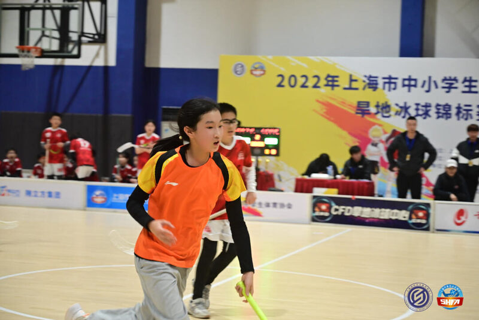

Ten years on the floor
Speed, angle, distance, screening, reaction window. On the floor these are things you feel going wrong slightly before they go wrong, which makes them intuitions rather than evidence. Everything downstream of this page is an attempt to find out which of them survive being made precise.
2022 Shanghai schools championship · 2025 national youth championship
→ read it